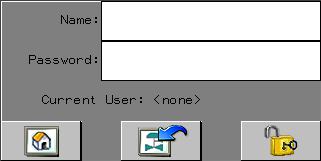
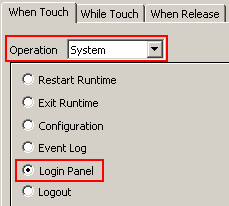
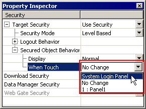

|
|
|
|
|
|
|
|

When using common security, if the security server is unavailable, then depending on your system's communication load, operators may experience a delay at login. For more information see Section 4.8.6, Common Security.
The System Login Panel logs users onto a target machine.
|
 |
||
|
Initial Panel |
Return |
Login |
You can display the System Login Panel during run time using the following methods:
Displaying the System Login Panel at Target Startup
The System Login Panel can be set to display when the target machine starts up. See Section 20.3, Setting the Startup Panel for information on setting the System Login Panel to display on target start up.
Displaying the System Login Panel using Scripts
A script can be used to display the System Login Panel. Create a script that writes the System Login Screen panel ID (65502) to the _CurPanelID system variable. See Section 18.1, Programming with Scripts, for information on writing and running scripts.
_CurPanelID.write(65502); //writes the login panel ID to the system variable _CurPanelID
Displaying the System Login Panel using a Switch
You can use a Switch to display the System Login Panel. You must enable Target Security before you can set up a switch to display the Login Panel.
Create a switch, select System for the Operation, and select Login Panel.

When the defined switch is touched, it displays the Login Panel.
Displaying the System Login Panel using a Toolchest part
You can display the System Login Panel using a Toolchest part.
To add the Login Toolchest part to your project:
Drag the SystemLogin part from the Toolchest Security folder and drop it onto a panel or popup window.
When the System Login part is touched, it displays the Login Panel.
The When Touch setting in the Secured Object Behavior property sets Vijeo-Designer Runtime to display the System Login Panel when an unauthorized user touches a secured switch.
To set up When Touch security:
Target Security must be enabled before configuring Secured Object Behavior.
In the Security node's properties, select System Login Panel from the When Touch drop-down list.

Toolchest Login parts have been provided in the Security Toolchest folder to enable users to log in to secured target machines. Toolchest login parts are useful because they can be positioned on any panel or on any popup window. There are two login parts are available:
Login: At runtime, requires a user to enter their user name and password through a popup keypad. Alternatively, you can disable the popup keypad, which allows a user to log in through a target's external keyboard or function key.
FixedNameLogin: In the editor, requires a user name, which you enter in the UserName property of the part. At runtime, requires only a password to log in.
To add the Toolchest Login part to your project:
Drag the Login part from the Toolchest Security folder and drop it onto a panel or popup window.

When using common security, depending on your system's communication load, operators may experience a delay at login. For more information see Section 4.8.6, Common Security.
A script system method is available to log a user in to the target machine.
Sys.login();
See Section 18.3.8.5, System Methods (Sys.login).